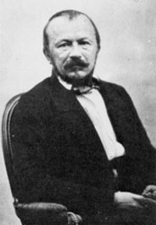

XI NERVAL
La blanche Aurélia chantait dans une étoile.
Les rondes de jadis tournaient au creux des bois.
L'antique fiancée rougissait dans ses voiles
Et l'ultime corbeau croassait sur le toit
Un refrain a suffi pour héler la détresse
Et faire resplendir, ô coeur harmonieux,
Profil athénien, le spectre de jeunesse
Qui rend triste et brise les plaisirs et les jeux.
Un matin, dans les bois, tu cherchais les vestiges,
De tes ans. Les clochers vibraient comme toujours.
L'abîme du destin te soufflait le vertige -
Mais la sainte pleurait encore ses dieux sourds.
Et les cloches en vain célébraient l'âme saine.
Un vol blanc de rayons ravit Aurélia.
Sylvie aux bois flétris vit mourir la fontaine
Et l'anneau des accords à l'autre la lia.
L'éternelle épousée attendait en silence,
Errante pèlerine aux lisières du temps.
Elle savait le mot, elle dit la sentence.
Une étoile jaillit vers les cieux éclatants.
Et l'errant, le songeur, le voyant de l'espace,
Sachant que dans son coeur Dieu s'était endormi
Remonta comme un chant vers les cieux blancs de grâce.
Sur la terre sonnaient les cloches de Loisy.
Michel Galiana (c) 1991
XI NERVAL
The starlike Aurelia was singing clad in white.
Dances of long ago were spinning in the grove.
The long since betrothed one blushed in her veils all right.
A delayed raven was cawing upon the roof.
The old tune was enough to hail back your distress
And clearly conjure up, deep in your serene heart,
The pure, finely profiled ghost full of youthfulness
That put you in sad mood and kept pleasure apart.
One morning, in the woods, you looked for the remnants
Of your past. The steeples chimed as they always do.
The abyss of your fate exhaled dizzy radiance -
And the holy woman mourned her deaf gods anew.
And the bells in vain rang, extolling the sane soul.
Aurelia was caught in the bright beams of the sun.
In withered woods Sylvie saw the fountain get foul
And the wedding ring bound her to another one.
Bride for ever, she would remain silent and wait,
A wandering pilgrim on the fringes of time.
And, being aware of it, the shibboleth she said.
And a star spurted up from darkness into shine.
And now, the wanderer, dreamer and space seer,
Knowing that in his heart henceforth God was drowsy,
Like a song, rose again in the graceful white air.
While, on the earth, one could hear the bells of Loisy.
Transl. Christian Souchon 01.01.2004 (c) (r) All rights reserved
Ce poème est un résumé concis mais complet du récit de Nerval "Les Filles du Feu".
This is a concise but exhaustive summary of Nerval's narrative "Les Filles du Feu".